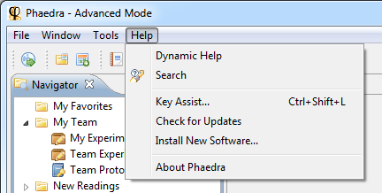

If you want to request access for Phaedra, or you encounter a problem in Phaedra the Help system does not have a solution for, please contact the Phaedra support team.
Before contacting support, make sure you are using the latest version of Phaedra. To verify this, click on Help > Check for Updates:
